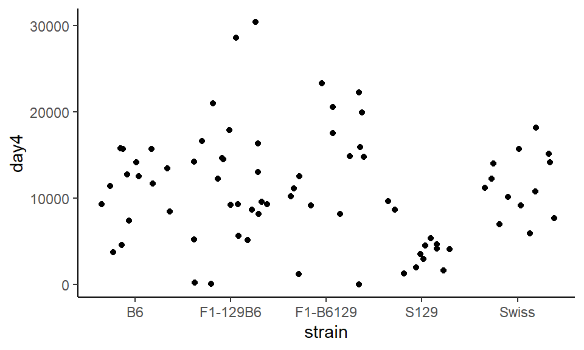

6 Descriptives
Descriptive statistics describe basic features of the data in simple summaries such as mean, median, and mode. These statistics used to present quantitative descriptions of data in graphing. You can use functions in base R and tidyverse to get descriptive statistics.
library(tidyverse)
atx <- read_csv("data/austin_weather.csv")
head(atx) # first 6 rows## # A tibble: 6 x 4
## month day year temp
## <int> <int> <int> <dbl>
## 1 1 1 2019 43.3
## 2 1 2 2019 39.4
## 3 1 3 2019 41.2
## 4 1 4 2019 44.1
## 5 1 5 2019 48.6
## 6 1 6 2019 48.8Focus in the temperature column for now
ggplot(atx, aes(x= temp)) +
geom_histogram(color="black", fill="lightseagreen", binwidth = 10)+
theme_classic()
6.1 Basic Descriptives
length(atx$temp) # length this tells you the 'n'## [1] 365sum(atx$temp) # sum## [1] 25107.5range(atx$temp) # range ## [1] 34.5 89.2min(atx$temp) # minimum## [1] 34.5max(atx$temp) # maximum## [1] 89.2var(atx$temp) # variance ## [1] 222.20726.2 Mean, Median, and Mode
mean(atx$temp) # mean## [1] 68.78767sum(atx$temp)/length(atx$temp) # mean## [1] 68.78767median(atx$temp) # median## [1] 70.8#estimate mode function
estimate_mode <- function(x) {
d <- density(x)
d$x[which.max(d$y)]
}
estimate_mode(atx$temp) # using the function to get estimate mode## [1] 83.69078For some descriptives, like mode, there is not a function already built into R, so a function needs to be made. The above code has a function for the estimated mode, this function works best with large data sets.
6.3 Standard Deviation
sd(atx$temp) # sample standard deviation## [1] 14.90662#population standard deviation function
pop.sd <- function(s) {
sqrt(sum((s - mean(s))^2)/length(s))
}
pop.sd(atx$temp) # population standard deviation with the function ## [1] 14.886186.4 Standard Error
What about standard error?
length(atx$temp) # we need to know the N to calculate the SEM## [1] 365sd(atx$temp) / sqrt(length(atx$temp)) #SEM by hand## [1] 0.780248sem <- function(x){sd(x) / sqrt(length(x))} # a function to get SEM
sem(atx$temp) #using the function## [1] 0.780248please note - if you have missing data use this function for SEM
sem <- function(x){sd(x,na.rm=T) / sqrt(length(na.omit(x)))}6.5 Inter-quartile Ranges
quantile(atx$temp, .25) # this is the lower quartile## 25%
## 56.5quantile(atx$temp, .75) # this is the upper quartile## 75%
## 83.3IQR(atx$temp) # this is the inter-quartile range.## [1] 26.8Don't be worried if these quartiles are slightly different to what you'd get by hand.
ggplot(atx, aes(y=temp)) +
geom_boxplot(color='black', fill='lightseagreen')
nb we get those numbers on the x-axis because there is no 'group' we can get rid of them like this:
ggplot(atx, aes(y=temp)) +
geom_boxplot(color='black', fill='lightseagreen') +
scale_x_discrete(breaks = NULL)
6.6 Descriptives for Groups
Often in experiments you are looking for group differences, the following code will show you how to get descriptive statistics for each group.
This is a time where tidyverse comes in handy!
First read in the data and notice it has a group column, genre.
vg <- read_csv("data/videogames.csv")
head(vg)## # A tibble: 6 x 12
## name platform year genre publisher NA_sales EU_sales JP_sales global_sales
## <chr> <chr> <int> <chr> <chr> <dbl> <dbl> <dbl> <dbl>
## 1 Wii ~ Wii 2006 Spor~ Nintendo 41.4 29.0 3.77 82.5
## 2 Mari~ Wii 2008 Raci~ Nintendo 15.7 12.8 3.79 35.6
## 3 Wii ~ Wii 2009 Spor~ Nintendo 15.6 11.0 3.28 32.8
## 4 Wii ~ Wii 2007 Spor~ Nintendo 8.92 8.03 3.6 22.7
## 5 Wii ~ Wii 2009 Spor~ Nintendo 9.01 8.49 2.53 21.8
## 6 Gran~ PS3 2013 Acti~ Take-Two~ 7.02 9.14 0.98 21.1
## # ... with 3 more variables: critic <int>, user <dbl>, rating <chr>The function table() can show you the n for all groups.
table(vg$genre)##
## Action Racing Shooter Sports
## 997 349 583 573Using describeBy() from the psych package can be a very quick and easy, but a bit annoying to look at. It also ignores missing data which is helpful.
- remember to install the
psychpackage before using it.
library(psych) ## this is not working on my computer
describeBy(vg, group = "genre")Writing code using tidyverse can give us descriptive statistics in a more organized way.
vg %>%
group_by(genre) %>%
summarise(meanNA = mean(NA_sales))## # A tibble: 4 x 2
## genre meanNA
## <chr> <dbl>
## 1 Action 0.407
## 2 Racing 0.397
## 3 Shooter 0.555
## 4 Sports 0.603If you had missing data, you'd do it like this. Also, as.data.frame() just helps us see decimal places.
vg %>%
group_by(genre) %>%
summarise(meanNA = mean(NA_sales, na.rm = T)) %>%
as.data.frame()## genre meanNA
## 1 Action 0.4071013
## 2 Racing 0.3967908
## 3 Shooter 0.5554717
## 4 Sports 0.6034031You can do several summaries at once like this
vg %>%
group_by(genre) %>%
summarise(meanNA = mean(NA_sales),
sd_NA = sd(NA_sales),
meanEU = mean(EU_sales),
sd_EU = sd(EU_sales)) %>%
as.data.frame()## genre meanNA sd_NA meanEU sd_EU
## 1 Action 0.4071013 0.8189867 0.2668004 0.5772930
## 2 Racing 0.3967908 1.0315188 0.3085100 0.8522769
## 3 Shooter 0.5554717 1.2165479 0.3310292 0.6674269
## 4 Sports 0.6034031 1.9868151 0.3260733 1.4352370To save time, you can tell it to just get the summary of all numeric columns.
vg$year <- as.factor(vg$year) # just need to make year non-numeric first
vg %>%
group_by(genre) %>%
summarise_if(is.numeric, mean, na.rm = T) %>%
as.data.frame()## genre NA_sales EU_sales JP_sales global_sales critic user
## 1 Action 0.4071013 0.2668004 0.04857573 0.8349649 68.01605 7.117954
## 2 Racing 0.3967908 0.3085100 0.03246418 0.8630946 69.84241 6.991691
## 3 Shooter 0.5554717 0.3310292 0.02288165 1.0245969 70.48714 6.948885
## 4 Sports 0.6034031 0.3260733 0.04808028 1.1108028 72.94764 6.970157 vg %>%
group_by(genre) %>%
summarise_if(is.numeric, sd, na.rm = TRUE) %>%
as.data.frame()## genre NA_sales EU_sales JP_sales global_sales critic user
## 1 Action 0.8189867 0.5772930 0.14425469 1.670552 14.20560 1.339989
## 2 Racing 1.0315188 0.8522769 0.24017403 2.363348 14.00640 1.497225
## 3 Shooter 1.2165479 0.6674269 0.07343275 2.087551 15.11614 1.540249
## 4 Sports 1.9868151 1.4352370 0.30421425 3.996394 13.44039 1.4637346.7 Comparing population and sample means
Why we need the sample standard deviation.
The sample SD is an estimate of the population SD. We need this estimate because we never have data from the full population but only random samples.
The formula for population sd is the square root of the variance divided by N, where are the sample sd is the square root of the variance divided by n -1.
x <- c(14, 11, 5, 3, 8, 10, 9, 15)
pop.sd(x) ## [1] 3.838538sd(x) ## [1] 4.10357The is a .3 difference if the standard deviations. However, would the difference be as big with a bigger sample?
set.seed(1) # just so we all get the same results
x <- rnorm(100, mean = 8) #100 random numbers with mean of 8.
pop.sd(x) ## [1] 0.8936971sd(x) ## [1] 0.8981994Sample SD is larger than population SD but this difference gets smaller as sample sizes increase.
For visual proof that using the population SD underestimates for samples.
For the example say we have a population of 1000, with a mean of 199.91 and population SD of 8.28.
set.seed(1)
population <- rnorm(1000, mean = 200, sd = 8)
mean(population) #199.91## [1] 199.9068pop.sd(population) #8.28## [1] 8.275186What if you did not know the real population SD and you were going to take samples of size 15 to try and estimate the population mean and SD.
s1 <- sample(population, 15, replace = T)
mean(s1) ## [1] 200.7815pop.sd(s1) ## [1] 9.27111sd(s1) ## [1] 9.59651Let's try another sample:
s2 <- sample(population, 15, replace = T)
mean(s2) ## [1] 202.2548pop.sd(s2) ## [1] 7.38066sd(s2) ## [1] 7.639709So, in one sample the sample SD was closer to the real pop SD in the other, the popSD was closer to the real pop SD.
Now let's do this for 10,000 samples:
results.means<- vector('list',10000)
results.popSD<- vector('list',10000)
results.sampSD<- vector('list',10000)
for(i in 1:10000){
s <- sample(population, 15, replace = T)
results.means[[i]] <- mean(s)
results.popSD[[i]] <- pop.sd(s)
results.sampSD[[i]] <- sd(s)
}Sample mean, remember the population mean = 199.91
means <- unlist(results.means) # sample means
mean(means) ## [1] 199.872Standard deviations using the population SD
popSDs <- unlist(results.popSD) # SDs using popSD
mean(popSDs)## [1] 7.839468Sample SDs
sampSDs <- unlist(results.sampSD) # sample SDs
mean(sampSDs)## [1] 8.11462Now graph everything!
This shows the sample mean is a good etimate of the population mean, on average.
ggplot(data.frame(means), aes(x=means)) +
geom_histogram(color='black', fill='blue', alpha=.2)+
theme_classic() +
geom_vline(xintercept = mean(means), lwd=1, color="black") +
geom_vline(xintercept = 199.91, lwd=1, color="orange", lty=2) +
ggtitle("Sample Means Distribution")## `stat_bin()` using `bins = 30`. Pick better value with `binwidth`.
However, this shows the population SD formula with samples, leads us to underestimating the real population SD - on average there is a lot of variation though.
ggplot(data.frame(sampSDs), aes(x=sampSDs)) +
geom_histogram(color='black', fill='blue', alpha=.2)+
theme_classic() +
geom_vline(xintercept = mean(sampSDs), lwd=1, color="black") +
geom_vline(xintercept = 8.28, lwd=1, color="orange", lty=2) +
ggtitle("SD Distribution when using Sample SD")## `stat_bin()` using `bins = 30`. Pick better value with `binwidth`.
Overall, using the sample SD formula with samples, provides a better estimate of the population SD on average. This is why we divided by n-1 for sample SD.